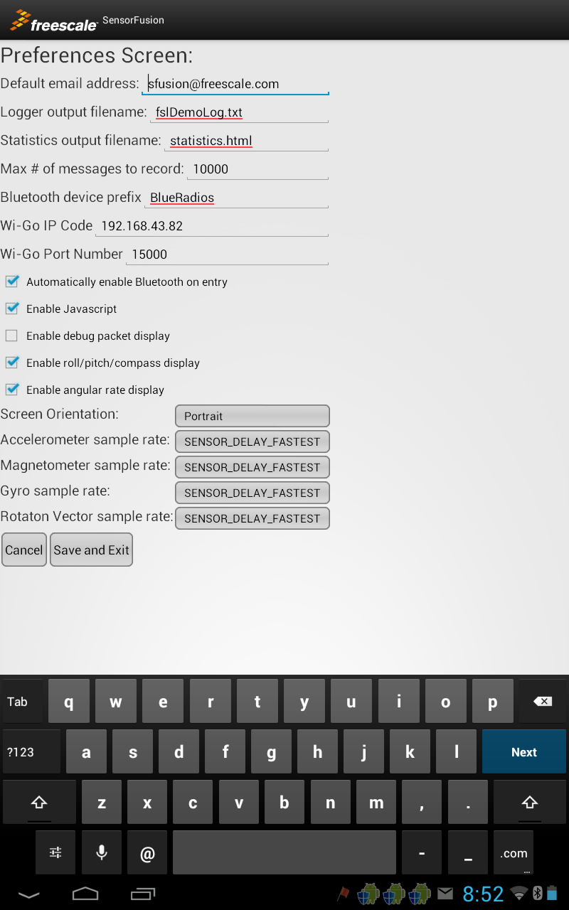

Setting Preferences
Getting to the Preferences Screen
You get to the preferences screen by selecting Preferences on the options menu (press the
icon or options button on your device to get to the options menu).

Preferences Controls
The resulting dialog looks is shown below.

You can store a limited number of predefined values on your Android device storage to control operation of this application. These are:
- Default email address - used as default address for "sharing" screen and logger dumps
- Logger output filename - The log window in this application only displays a limited number of the most recent messages sent to it. This field is used to specify a file location to be used for data storage of all messages from a given session.
Output file logging is enabled via the "File logging enable" checkbox which is adjacent to the Source Spinner control in the Log, Device and Panorama views. See the section on logging to a data file for more details.
- Statistics output filename - specifies the filename to be used for storing stats reports.
- Max # of messages to record - used to limit the growth of your output file. We recommend you determine how large a file you would like in MB, then divide by 50 to determine this number.
- Bluetooth device prefix - When using Bluetooth enabled boards, the application looks for an already paired board starting with this prefix.
- Wi-Go IP Code - the IP code being used by the web server running on your Wi-Go module.
- Wi-Go Port Number - the port number assigned to the web server running on your Wi-Go module. Normally "15000".
- Automatically enable Bluetooth on entry - boolean checkbox which, if checked, allows the application to automatically link to the Freescale sensor board upon program launch. You must have previously performed a Bluetooth "pairing" operation to use thie feature.
- Enable Javascript - Enabled by default. You need to check this box to allow documentation links to work through firewalls. Many web sites also require that Javascript be enabled in order for them to display properly (including Freescale's). It is recommended that you leave this enabled unless your security concerns are stronger than your desire for readable content.
- Enable debug packet display - Used only for development purposes to enable display of debug packet information on the Device view.
- Enable roll/pitch/compass display - IF your development board supports computation of roll/pitch/compass heading, this option will display that data as part of the device view.
- Enable angular rate display - This option causes angular rate data to be displayed as part of the Device view. For convenience, this display is in degrees/sec, not radians/sec used elsewhere. Angular rates are computed on embedded software running on your Freescale development board. They are not available when using local sensors, or Wi-Go. Angular rate information is computed as a function of the Source/Algorithm spinner settings as follows:
- Remote accel - angular rates are computed using virtual gyro computatons based upon orientations computed from accelerometer only. As such, they will be inaccurate with respect to rotation about the gravity vector.
- Remote mag/accel - - angular rates are computed using virtual gyro computatons based upon orientations computed from accelerometer and magnetometer readings. They are therefore sensitive to magnetic interference.
- Remote accel/gyro - gyro offsets are calculated via a 6-axis (accel + gyro) indirect Kalman filter and subtracted from physical gyro readings. These are then displayed on the Device view.
- Remote 9-axis - gyro offsets are calculated via a 9-axis (accel + mag + gyro) indirect Kalman filter and subtracted from physical gyro readings. These are then displayed on the Device view.
- Screen Orientation - although nominally designed for portrait screen orientation, some devices may need you to be in landscape mode for video outputs to be properly oriented.
- Magnetometer/Accelerometer/Gyro/Rotation sample rate spinner controls - Used to control sample rates for the sensors located on your Android device. Options include:
- SENSOR_DELAY_NORMAL
- SENSOR_DELAY_UI
- SENSOR_DELAY_GAME
- SENSOR_DELAY_FASTEST
These correspond to standard Android settings for sensor sample rates. Android defines ranges, but not exact values, for each of these enumerated types. Actual rates will vary from device to device.
Click on the Save and Exit button to save modified changes. Click on Cancel to discard changes.
In general, when you change and save preferences, you should expect that you need to exit and restart the program before you are guaranteed to see them take effect.
Explore the Freescale Sensors Website.
Continue to Change Log.